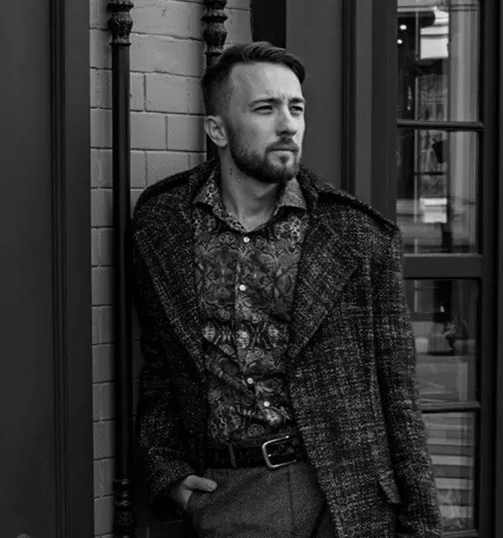

IT Project Manager
ОПЫТ РАБОТЫ ИТ ПМ: более 7 лет
НАПРАВЛЕНИЯ: fintech, e-commerce
ПОДХОДЫ К УПРАВЛЕНИЮ: Agile и Waterfall
ФРЕЙМВОРКИ И МЕТОДЫ: Scrum, Kanban, Lean, XP, SAFe
ИНСТРУМЕНТЫ: MS-Project, Jira, Confluence, Kaiten, Asana, Notion, Trello, Miro и др.
ИИ-ПОМОЩНИКИ: chatjpt, curcor, lovable,
ДОПОЛНИТЕЛЬНО: опыт работы Frontend-разработчиком, знание Git и SQL

реализованных проектов
запущенных продуктов
сформированных команд
Успешно запустил MVP-версию аналога кредитной карты для клиентов Альфа-Денег. Клиент видит оффер в контуре банка и оформляет заявку, после подписания договора активируется счет с лимитом до 30 тыс. руб.
В результате масштабных работ с серверами, доменами и софтом заказчика был запущен стабильно работающий сайт девелоперской компании, а затем - личные кабинеты клиента и менеджера, интеграции с CRM и функционал А/Б тестирования.
Были с нуля разработаны UI/UX-дизайн каталога, карточки, корзины, страницы оформления заказа и личного кабинета. Реализован функционал оформления, оплаты и отслеживания заказа. Написана интеграция с программой ПВЗ. Создана кастомная корзина, личный кабинет. Настроена интеграция с сервисом службы поддержки.
Управлял полным циклом проектов: от инициации, до завершения и оценки результатов
Выстраивал эффективные и доверительные взаимоотношения со стейкхолдерами, командами и другими заинтересованными сторонами
Создавал и управлял кросс-функциональными командами разработки, включая найм, отслеживание эффективности и развитие сотрудников
Внедрял Agile, Scrum и другие инструменты и фреймворки гибкого проектного управления
Тестировал и проводил презентации готовых продуктов и задач на уровне топ-менеджмента компаний
Вел проектную документацию: паспорта проектов, ТЗ, отчёты о закрытии спринтов и т.д.
Управлял рисками: составлял реестры и проводил анализ, занимался митигацией рисков
Управлял PMO: от найма сотрудников до стандартизации и оптимизации процессов и инструментов
7 лет 4 месяца
Высшее образование
Информатика и вычислительная техника
2018
Google Project Manager
Основы веб-вёрстки
Базовый SQL
В должности менеджера проектов я успешно реализовал большое количество проектов, связанных с банковскими интеграциями, комплаенс и e-commerce. Запускаю проекты любой степени сложности, длительности и объема. Выстраиваю эффективную коммуникацию, прозрачные процессы и доверительные отношения со стейкхолдерами, командой и другими заинтересованными сторонами.
Формировал с нуля и успешно управлял кросс-функциональные команды разработки, внедрил Agile, Scrum и Kanban в работу команд и рабочих групп. Отличное знание и применение в работе Jira, Confluence, Trello, MS Project, Notion и других инструментов проектного управления.
Имею опыт построения BPMN и UML-диаграммы, анализировать данные и проектировать БД.
В свободное время изучаю новые инструменты проектного управления и английский, а также занимаюсь веб-разработкой. Люблю активные виды спорта и стараюсь по-возможности путешествовать.